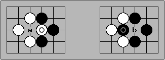
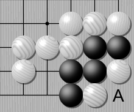

Atari-go
El Atari-go es una variante del Go particularmente sencilla, muy utilizada en la enseñanza para comenzar a comprender los elementos más básicos del juego. La idea es que se juega al igual que el Go en un tablero cuadriculado, colocando piedras de colores (blancas y negras) sobre las intersecciones del mismo. Nosotros utilizaremos un tablero de 9x9 intersecciones.
- Elementos de juego
- El Atari-go es un juego de dos jugadores. Un jugador utiliza las piedras negras, y el otro las blancas.
- Se juega sobre un tablero de 9x9 intersecciones.
- A lo largo del juego, en cada momento algunas intersecciones estarán ocupadas por piedras negras, algunas por piedras blancas, y las restantes se encontrarán vacías.
- Inicialmente, el tablero se encuentra vacío.
- Durante el juego, llamamos un grupo de un jugador, a un conjunto maximal de piedras de su color conectadas entre sí horizontal o verticalmente.
- Decimos que una intersección vacía del tablero es una libertad de un grupo, cuando es adyacente horizontal o verticalmente a alguna de las piedras del grupo.
- Regla de juego y alternancia
- Comienza el jugador que utiliza las piedras negras. Los jugadores se alternan realizando jugadas una vez cada uno. Una jugada válida consiste en colocar una piedra del color del jugador sobre una intersección vacía del tablero.
- Regla de captura
- Si luego de que un jugador realice una jugada, uno o más de los grupos de su rival queda sin libertades, dichos grupos son capturados y se sacan todas sus piedras del tablero.
- Notar que en la siguiente posición, si blanco juega en A, logra capturar las dos piedras negras.

- Notar que la jugada indicada con a sería válida para negro, y al realizarla captura la piedra blanca marcada con un círculo.
 - Regla de no suicidio
- Si luego de que un jugador realice una jugada (incluyendo de ser necesaria, la aplicación de la regla de captura) un grupo del propio jugador queda sin libertades, tal jugada se considera suicidio y está prohibida.
- Por ejemplo, la jugada indicada con A sería inválida para blanco, pues sus piedras del rincón se quedarían sin libertades.
 - Objetivo:
- El primer jugador en capturar un grupo a su rival gana. Si un jugador no tiene jugadas válidas, pierde inmediatamente.